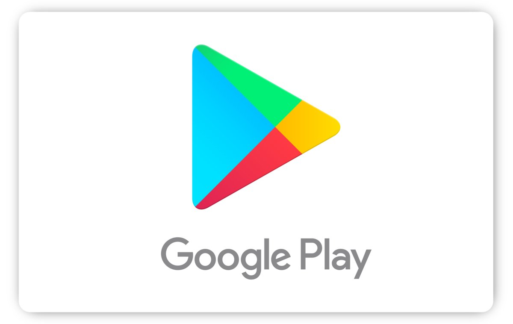
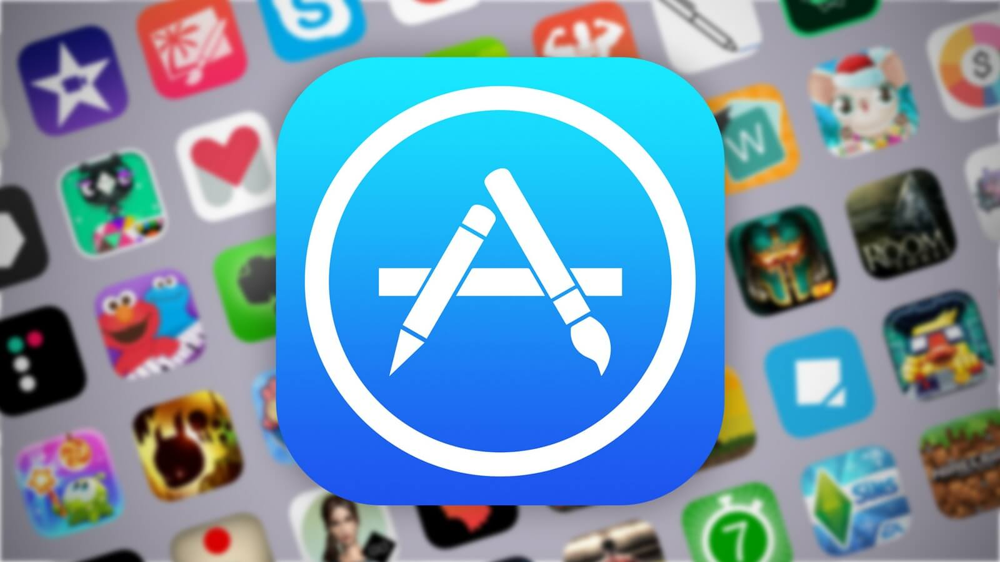
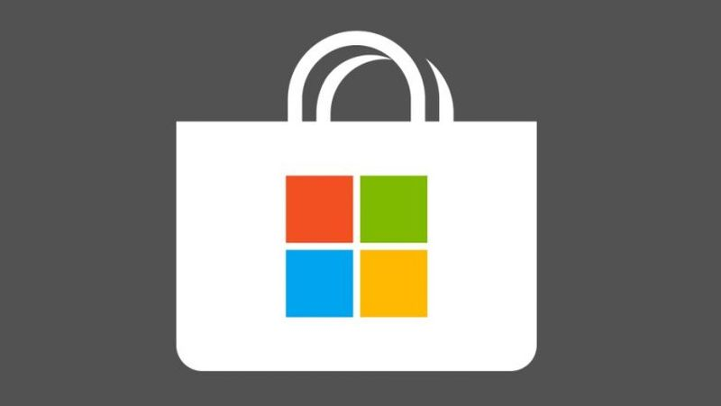

Dystrybucja
Google Play
Internetowy sklep Google z aplikacjami, grami, muzyką, książkami, magazynami, filmami i programami TV. Treści ze sklepu są przeznaczone do korzystania za pomocą urządzeń działających pod kontrolą systemu operacyjnego Android. Google Play powstało w wyniku przekształcenia Google Music (uruchomiony 11 listopada 2011) oraz Android Market (uruchomiony 22 października 2008) w ujednoliconą usługę. 12 kwietnia 2012 udostępniono polskim deweloperom możliwość sprzedaży programów.
App Store
Platforma dystrybucji cyfrowej z aplikacjami dla iPada, iPhone'a oraz iPoda touch, stworzona przez Apple Inc. Aplikacje w sklepie są tworzone przez właściciela App Store, firmę Apple, oraz przez osoby, które posiadają pakiet iOS SDK (Software Development Kit). W App Store znajdują się aplikacje i gry płatne oraz bezpłatne. W ofercie dostępne są także karty podarunkowe.
Microsoft Store
Internetowy sklep z aplikacjami dla systemu operacyjnego Windows 8 oraz Windows 10. Został po raz pierwszy zaprezentowany przez firmę Microsoft na konferencji 6 grudnia 2011 roku; wprowadzony równolegle z Windows 8 i Windows Server 2012. Jest to jedyne źródło, z jakiego użytkownicy mogą pobierać aplikacje z interfejsem Modern UI, jednak przeznaczony jest także do prezentacji aplikacji desktopowych certyfikowanych do działania na systemie Windows.